Find Your
Way Around
Way Around
The FreeDAWm Guide
One page, one idea:
cheat sheets for recording, editing and mixing
cheat sheets for recording, editing and mixing
FreeDAWm
A free, open-source studio for recording, editing and mixing music, on the computer you already have.
FreeDAWm is a digital audio workstation. It runs on macOS, Windows, Linux and FreeBSD, and in a web browser.
You work in two main windows. The Edit window is the timeline, where you record, cut and arrange. The Mix window is the mixer, where you balance and shape the sound.
This guide is a binder of cheat sheets, not a manual to read from start to finish. Each page covers one idea, and most are a picture with labels.
Keep the page you need open beside FreeDAWm, or print it and pin it up.
Most pictures show a short rock session: drums, bass, guitars and a stack of vocals. A few show Midnight Groove, the demo song that comes with FreeDAWm.
The two windows you will spend your time in, the four ways clips can move, and the keys worth learning first.
Know what each part of the timeline window is for, so you can find a control without hunting. Open it with Window › Edit, or press Cmd = to flip between Edit and Mix.

Read a channel strip from top to bottom. Sound enters at the top of a strip and leaves at the fader, so the order on screen is the order the sound travels.

The list on the left is the same Tracks and Groups list as in the Edit window. The coloured bar under each name matches that track's clips on the timeline.
The edit mode decides where a clip lands when you move it. The tool decides what a click or drag does. Pick both before you edit.
Clips go exactly where you drop them. Gaps and overlaps are allowed. This is the mode FreeDAWm starts in.
Clips close up end to end. Cut a piece out and everything after it slides left to fill the gap.
FreeDAWm asks for an exact position, and the clip goes there. Use it when you know the time and not the place.
Clips and selections jump to the nearest grid line. Press F4 again for Relative Grid, which keeps a clip's offset from the line.
Left and right: does the clip stay where you put it, or does FreeDAWm line it up for you?
Up and down: do you place it by hand, or by a time on the ruler?
Press F6 and F7 together for three tools in one. Near a clip's edge it trims, in the upper half of a clip it selects, and in the lower half it grabs.
Learn these first. They cover most of a session, and each one saves a trip to the menus. On Windows, Linux and FreeBSD, press Ctrl wherever you see Cmd.
| Play or stop | Space |
| Record | F12 or Cmd Space |
| Play at half speed | Shift Space |
| Back to the start | Home |
| Go to the end | End |
| Add a marker | Enter |
| Loop playback on or off | Cmd Shift L |
| Play the selection | Alt [ |
| New track | Cmd Shift N |
| Record enable | Shift R |
| Solo | Shift S |
| Mute | Shift M |
| Input monitoring | Shift I |
| Group tracks | Cmd G |
| New session | Cmd N |
| Open a session | Cmd O |
| Save | Cmd S |
| Save as | Cmd Shift S |
| Import audio | Cmd Shift I |
| Bounce the mix to a file | Cmd Alt B |
| Undo | Cmd Z |
| Redo | Cmd Shift Z |
| Cut, copy, paste | Cmd X C V |
| Duplicate | Cmd D |
| Select all | Cmd A |
| Split at the selection | Cmd E |
| Heal a split | Cmd H |
| Trim to the selection | Cmd T |
| Create fades | Cmd F |
| Mute a clip | Cmd M |
| Clear the selection | Cmd B or Delete |
| Nudge later or earlier | + − |
| Zoom out or in | R T |
| Fit the whole session | Alt A |
| Zoom to the selection | Alt F |
| Zoom toggle | E |
| Jump to the next clip edge | Tab |
| Switch between Mix and Edit | Cmd = |
| Edit modes | F1 to F4 |
| Tools | F5 to F10 |
Change any shortcut in Setup › Keyboard Shortcuts. A few keys are fixed, including Space, Enter, Tab and the F keys.
Get sound into FreeDAWm: choose your audio device, make a track, record a take, and fix the part that went wrong without redoing the rest.
Tell FreeDAWm which device to play through and record from. You do this once per device, in Setup › Playback Engine.
 ABCDEFGH
ABCDEFGH
You hear yourself with almost no delay, but the computer works harder and may crackle. Best while recording.
Steady playback with lots of effects, but a delay you can hear when you play or sing. Best while mixing.
On the picture the input reads "opened on first record or monitor". FreeDAWm only opens your microphone when you arm a track or turn on monitoring.
Give your inputs names you will recognise, then make a track to record on. Named inputs save you from guessing which socket is which.
 ABCDE
ABCDE
 12345
12345
Track › New, or Cmd Shift N
| Audio Track | Records and plays sound: a voice, a guitar, a drum mic. |
| Instrument Track | Plays a software instrument from the notes you record or draw. |
| MIDI Track | Holds notes only, to drive an instrument somewhere else. |
| Aux Input | Has no clips. It takes sound from a bus, often for a shared reverb. |
| Master Fader | Controls the level of an output, usually the whole mix. |
Record your first take in six steps. The first three happen on the track, the last three on the transport.
 123
123
 456
456
| Metronome | The icon beside Tempo turns the click on or off during the take. |
| LLM | Low Latency Monitoring. It bypasses the effects that add delay on the tracks you are recording. |
| Loop | Plays the selection round and round. See the next page for recording in a loop. |
| Tempo and Meter | Set these before you record to a click. Drag the tempo, or click it to type a number. |
Press Cmd Z to undo the take, then record again. FreeDAWm autosaves as you work and can recover a session after a crash.
Fix one line without redoing the song, record several tries in a row, and build one good take from the best parts of each.
Select the part you want to redo, then record. Only the selection is replaced. Everything around it stays.
No selection? Press Record while the song plays to drop in at that moment.
Turn on Options › Pre/Post-Roll, or press Cmd K. Playback starts a little before the punch so you can play along into it, and carries on a little after.
Turn on Options › Loop Record, or press Alt L. Select the bars to repeat and record. Each time round makes a new take, so you can keep trying without stopping.
Click the small arrow before the track name to show its take layers. Drag across the part of a take you like and it is copied up into the track, with a short crossfade at each join.
Shape what you recorded: cut and move clips, smooth the joins with fades, and find your way round a long song.
Six edits do most of the work. Each one acts on the selection, so select first: drag across a clip with the Selector, or click once to place the cursor.
Cuts the clip at both edges of the selection. With only a cursor, it cuts once.
Select across a cut and heal it. The two pieces become one clip again.
Keeps the selected part of the clip and removes the rest.
Places a copy straight after the selection. Press it again for another.
The clip stays where it is but makes no sound. Press again to bring it back.
Turns the selection, gaps included, into one new clip.
These edits change clips, not your recordings. To get trimmed sound back, drag the clip's edge out again with the Trim tool. Cmd Z undoes any of them.
A cut that lands in the middle of a sound can click. A fade ramps the level so the join is smooth. Put one on every edit you can hear.
Select from before a clip's start to where the sound should be at full level.
Select from where the fade should begin to past the clip's end.
Select across the join between two clips. One fades out as the other fades in.
A straight ramp.
Keeps a crossfade's level steady. The usual choice.
Gentle at both ends.
Starts slowly, then rises fast.
Rises fast, then eases in.
Each curve shows the level of a fade in, from silence on the left to full on the right. A fade out is the mirror image.
With the Smart Tool, drag from the top corner of a clip to draw a fade by hand. Edit › Fades › Delete removes the fades in the selection.
Label the parts of your song once, then jump between them. A few keys cover the rest: zooming, stepping from clip to clip, and nudging.
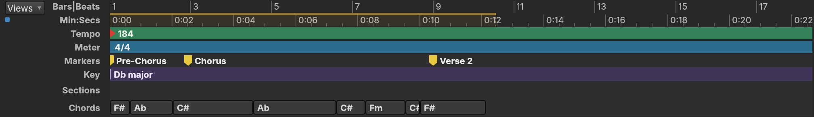
Markers show as flags on the Markers ruler, above the key and the chords.
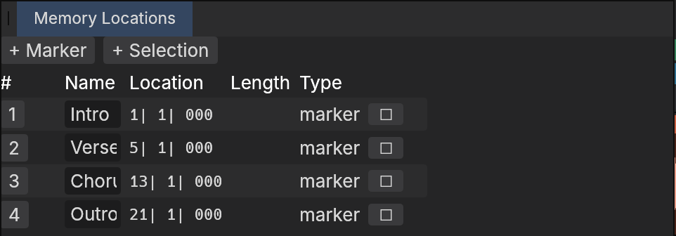
ABCWindow › Memory Locations, or the Memory Locations tab at the bottom of the Edit window
| Zoom out or in | R T |
| Fit the whole session | Alt A |
| Zoom to the selection | Alt F |
| Zoom toggle | E |
| Taller waveforms | Cmd Alt ] |
| Recall a zoom preset | Click 1 to 5 |
| Store a zoom preset | Cmd-click 1 to 5 |
| Start or end of the session | Home End |
| Next clip edge | Tab |
| Previous clip edge | Alt Tab |
| Extend the selection as you go | Add Shift |
| Nudge later or earlier | + − |
| Bigger or smaller grid | Shift = − |
| Bigger or smaller nudge | Alt Shift = − |
Turn on Options › Tab to Transient and Tab stops at each hit inside a clip, not only at its edges. It is the quick way to find a drum hit to cut on.
Write with notes: the piano roll, the Juke drum machine and its patterns, and the Lift sampler.
Find your way round the piano roll. Select a MIDI clip and choose Window › MIDI Editor, or click the MIDI Editor tab at the bottom of the Edit window. The next page covers editing.
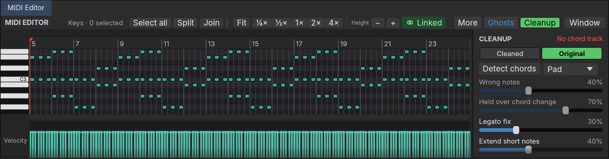
ABCDEFGHI| Play the selection | Space with the pointer over the notes |
| Move without snapping | Hold Alt while you drag |
| Cancel a drag | Esc |
| Fit the clip | F with the pointer over the notes |
| Quantize, Transpose | Alt 0, Alt T (also in the Event menu) |
Change what was played: move, stretch, split and tidy notes, then shape how hard they hit.
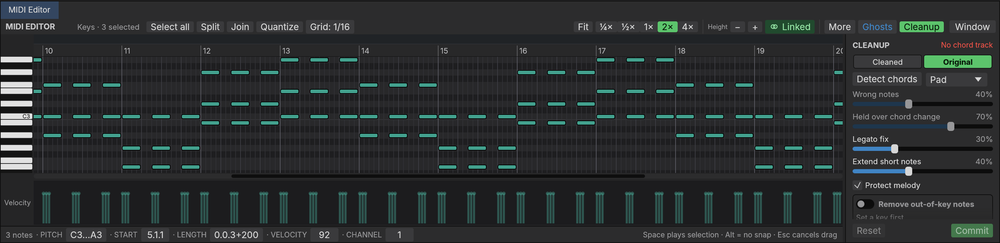
ABCDEFGHI| Select a note | Click it |
| Add to the selection | Shift-click |
| Move in time or pitch | Drag a note |
| Quantize | Alt 0 |
| Transpose | Alt T |
| Change Duration | Alt P |
| Controller lanes | The Lanes menu adds lanes under velocity for mod wheel, sustain, pitch bend and more. Click to add a point. |
Build a beat. Choose Track › New Beat and FreeDAWm makes an instrument track playing Juke, its drum machine, with a first pattern on the timeline. This page is the Kit tab, where you choose and shape the sounds.
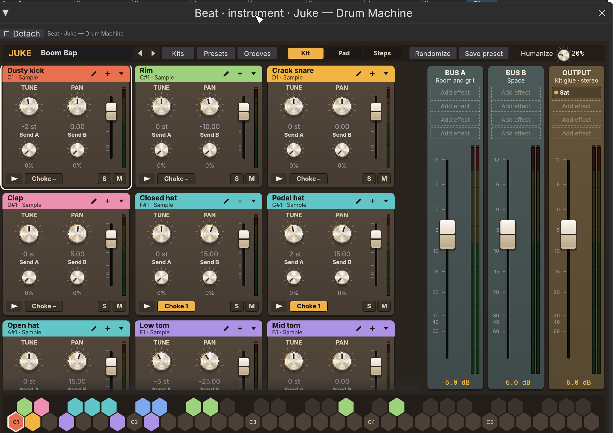
ABCDEFGHIJKProgram the beat on a grid. Each column is a step in the bar and each row is a pad. A lit step plays that pad at that moment.
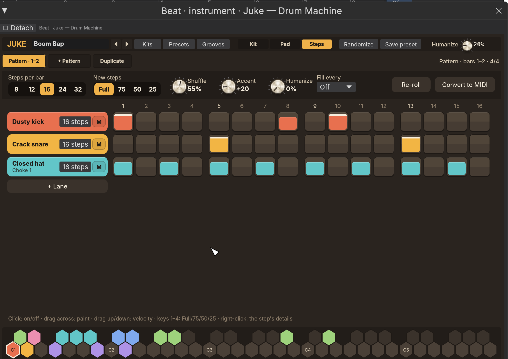
ABCDEFGHIJ| Step details | Right-click a step for its chance of playing, a roll of up to four hits, a flam, a nudge early or late, and a rule such as every other bar. |
| Keys 1 to 4 | Set the velocity of new steps: Full, 75, 50, 25. |
| Same every time | Random choices are fixed per bar, so a pattern plays and bounces the same way each time until you Re-roll. |
| On the timeline | A pattern clip trims, copies and loops like any clip. Editing its notes in the MIDI Editor turns it into a plain MIDI clip. |
Turn any sound into an instrument. Lift plays one sample across the keyboard. Make an Instrument Track, choose Lift as its instrument, and double-click the instrument slot to open this window.
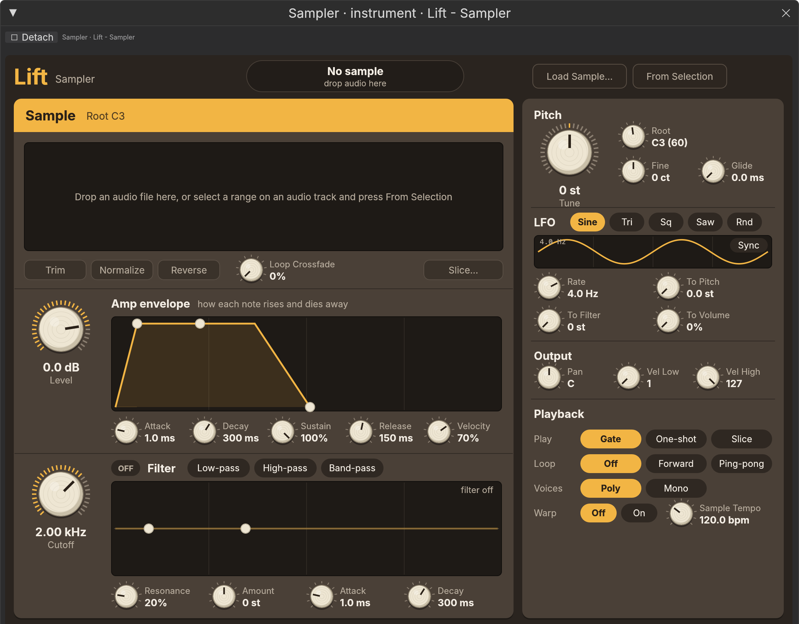
ABCDEFGHIJTune a voice note by note, and line up a stack of backing vocals against the lead.
Fix the notes that are off without flattening the performance. Select a vocal clip and choose AI › Tune Vocal, or open Window › Vocal Editor. No download is needed, and FreeDAWm analyses vocal tracks in the background.
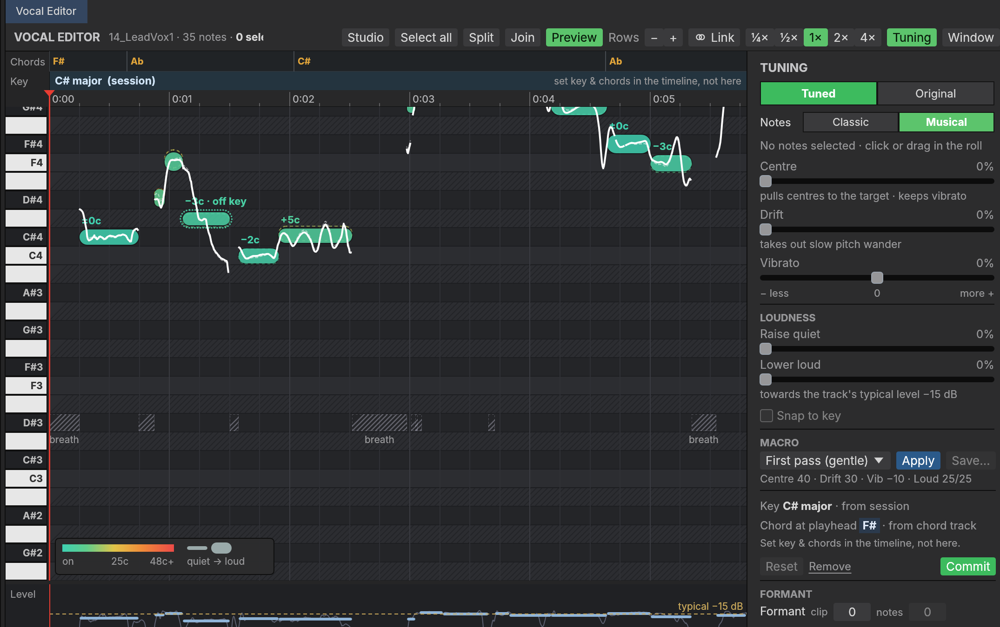
ABCDEFGHIJKLStart broad and finish by hand: apply a gentle macro to the whole track, then fix the few notes that still stand out.
| Centre | Pulls each note's middle toward the right pitch and keeps the singer's vibrato. |
| Drift | Takes out slow wandering within a note. |
| Vibrato | Less or more of the natural wobble. |
| Raise quiet, Lower loud | Evens out the level, toward the track's typical level. |
| Snap to key | Moves notes onto the nearest note of the song's key. Needs a key set on the timeline. |
| Move a note's pitch | Drag it up or down |
| Move without snapping | Hold Alt |
| Up or down a semitone | Alt ↑ Alt ↓ |
| Split a note | S at the pointer |
| Join two notes | J |
| Cancel a drag | Esc |
| Select all notes | Cmd A |
| Only the notes in view | Cmd Shift A |
| Add to the selection | Shift-click |
| Play the selection | Space |
| Play from the playhead | Shift Space |
| Clear the selection | Esc |
| Note bar | Under the selected note: cents, semitones, drift, vibrato and level. Drag a value sideways or double-click to type. |
| Scoops | Where the voice slides into a note there is a handle: Keep, Smooth or Shorten the slide. |
| Vocal tracks | Tracks named like Vox or BGV are marked as vocal and analysed for you. Track › Vocal Track sets it by hand. |
| In the mixer | Each vocal strip has a pitch box with the current note, plus Centre note and Flatten drift buttons. |
| Limits | Tuning changes pitch and level, not timing. A stretched clip plays untuned. Commit before you Consolidate. |
See every vocal part on one piano roll, so backing vocals can be tuned against the lead and against each other. Open it with Window › Vocal Studio, or the Studio button in the Vocal Editor.
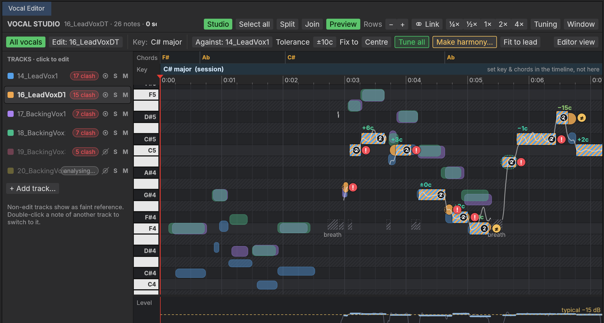
ABCDEFGHIJ| Edit All | Choose All under Edit to work on every shown part at once. A note never changes track. |
| Fit to lead | Lines a backing part up with the lead's pitch where they sing the same note. |
| Harmony preview | Make harmony draws the planned notes as dashed outlines before you create the part. |
Balance the tracks, shape each sound with the FireStation effects, share one reverb between many tracks, and make the mix move with automation.
Know the path sound takes through the mixer. Once you can trace it, you can work out why a change did or did not do what you expected.
A compressor sits before the fader, so turning the fader down does not change how hard it works. To drive it harder or softer, change the level before it: the clip's gain or the effect's own input.
Put an effect on a track. In the Mix window each effect is a tile at the top of the strip, and an empty slot is a dashed box with a plus. A strip holds up to 32, in any order.
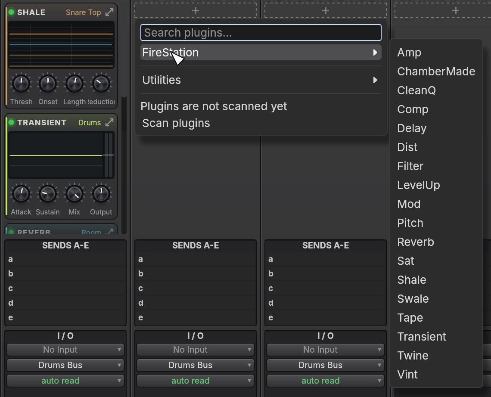
ABCDEFGHThe snowflake on a strip freezes the track. FreeDAWm plays a rendered copy and the effects stop using the computer. Click it again to unfreeze and carry on editing.
Every FireStation module opens the same way and shares the same top bar. Learn it once on Comp, shown here, and the other seventeen will feel familiar.
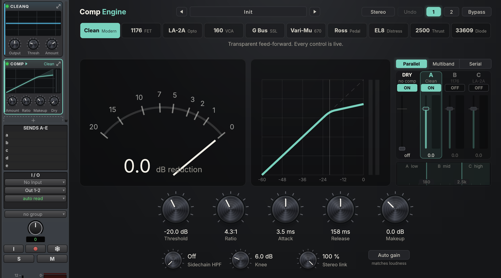
ABCDEFGHI| Slim or full editors | View › Mix Window Views › Slim Plugin Editors swaps each editor for a narrow version with the same controls. |
| Slim or wide strips | The Channel width bar above the strips: Slim, Wide or Auto, for the selected channels or all of them. |
| A window of its own | The arrow on a tile opens the full editor as a floating window you can leave open. |
| Sidechain | A module can listen to another track, such as a compressor on the bass that ducks when the kick hits. |
Match the problem you hear to the module that fixes it. These eighteen come with FreeDAWm and are the only effects in the menu until you scan your own plugins.
| Module | What it is | Reach for it when |
|---|---|---|
| CleanQ | Dynamic EQ with up to 24 bands, and a ceiling you can draw or let it learn. | Tone: muddy, harsh, boomy or dull. |
| Vint | Vintage EQ and colour boxes, seven circuits. | Broad, musical tone shaping. |
| Filter | Envelope and auto filters, moved by hand, by the sound, by an LFO or in steps. | Sweeps and wah. |
| Comp | Compressor with ten styles in three lanes: parallel, multiband or serial. | Uneven level. Glue on a bus. |
| Transient | Shapes the attack and sustain of any sound. | Drums that are too soft or too spiky. |
| Shale | Drum gate with lookahead and bleed removal. Can trigger a MIDI note per hit. | Spill between drum mics. |
| Swale | Automatic volume swells. | Fading notes in, like a bowed string. |
| Sat | Tube, transformer and tape-style saturation. | Sounds that are too clean. |
| Tape | Tape machine: saturation, compression, wow and flutter, head bump. | Warmth and gentle glue. |
| Dist | Twelve drive, overdrive and fuzz pedal circuits. | Grit, from a little to a lot. |
| Amp | Seven tube amps with built-in or impulse-response cabinets. | Guitars and bass recorded direct. |
| Mod | Fourteen circuits: choruses, flangers, phasers, tremolos, vibratos. | Width and movement. |
| Pitch | Octaver, harmonizer and whammy effects. | Extra octaves and harmonies. |
| Delay | Six voicings from digital to tape, synced to the tempo, with freeze and reverse. | Echoes. |
| Reverb | Room, hall, plate, spring, cloud and shimmer. | Putting a sound in a space. |
| ChamberMade | A reverb chamber you build: room, materials, speaker and mic placement. | A space of your own design. |
| Twine | Mastering clipper and true-peak limiter. | Loudness on the master. |
| LevelUp | Loudness-matched A/B, reference tracks, delivery metering and dither. | Checking the finished mix. |
Where a mode models a piece of hardware, the editor says so. To tune a voice, use AI › Tune Vocal, not Pitch. See page .
Browse everything you can put on a track, by picture. Open it with Window › Plugin Browser, Alt B, or the Plugin Browser tab at the bottom right of the Edit window.
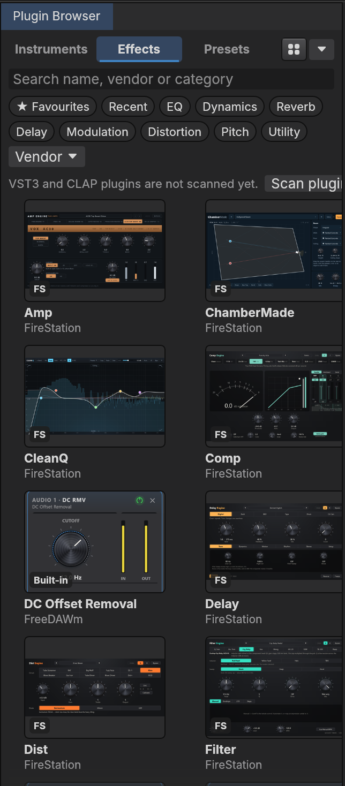
ABCDEFGHDrag a card onto a strip's empty slot to add it there, onto an existing tile to replace it, or onto a track in the Edit window. A preset for a hosted plugin loads in place.
Put several tracks in the same room. One reverb on an aux track, fed by a send from each track, sounds more natural than a separate reverb on every track and is lighter on the computer.
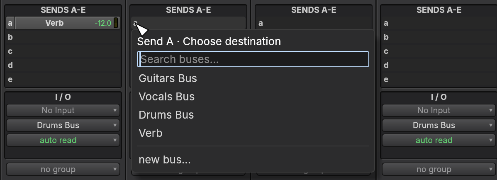
ABCDA send follows the track's fader. Turn a track down and less of it reaches the reverb, so the balance between dry and wet stays the same.
Make the mix change over time: a vocal that comes up in the chorus, a pad that fades in. Automation is a line you draw on the track, and FreeDAWm moves the control along it.
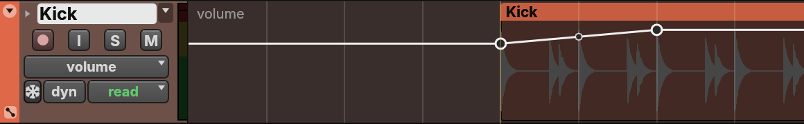
ABCDDraw it. Show the volume view, then double-click the line with the Grabber or the Smart Tool to add a point. Use the Pencil to draw a shape freehand.
Perform it. Set the mode to touch, press play and move the fader. FreeDAWm records the move and returns to the old line when you let go.
| off | Ignores the line. The fader stays wherever you put it. |
| read | Follows the line. This is the mode tracks start in. |
| touch | Records while you hold a control, then goes back to the line. |
| latch | Records from the moment you touch a control, and holds your last value until you stop. |
| write | Records over everything while the song plays. Switch back to read when you finish. |
| trim | Raises or lowers the whole existing line without redrawing its shape. |
Separate a mix into its parts, turn audio into notes, chords and lyrics, and generate new material, all on your own computer.
Know what each AI tool does and where its result lands. They all run on your own computer. Nothing is uploaded, and each result is one step you can undo.
| Tool | What it does | Where it lands |
|---|---|---|
| Separate Stems | Splits a mix into drums, bass, vocals and other, or six stems with guitar and piano. | New audio tracks |
| Make Karaoke | Separates the lead vocal from the backing. | Two new tracks |
| Split Drums | Splits a drum recording into kick, snare, toms, hi-hat, ride and crash. | New audio tracks |
| Clean Vocal | Removes noise and room reverb from a voice, with an Amount control. | The same clip, switchable |
| Tune Vocal | Note-based pitch and level correction. See page . | The same clip, switchable |
| Convert to MIDI | Turns audio into notes. Models for general use, piano, drums and vocals. | A new instrument track |
| Detect Chords | Works out the chords of a recording. | The Chords ruler |
| Transcribe Lyrics | Writes down the sung words with their timings. | The Lyrics ruler |
| MIDI Cleanup | Tidies a transcribed piano part. See page . | The same clip |
| Generate MIDI from Text | Describe the music and get a part per instrument. | New instrument tracks |
| Generate Song | Makes a whole song with vocals from style tags and lyrics. | A new audio track |
Select an audio clip or track first. Most of the menu is greyed out until you do. Generate MIDI from Text and Generate Song need no selection.
Every AI tool opens a small dialog like this one. Separate Stems is shown, and the others follow the same order: source, choices, where it runs, then Run.
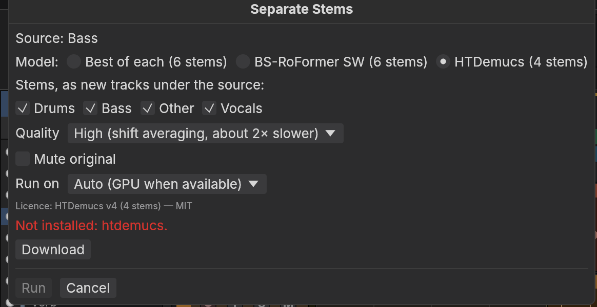
ABCDEFGH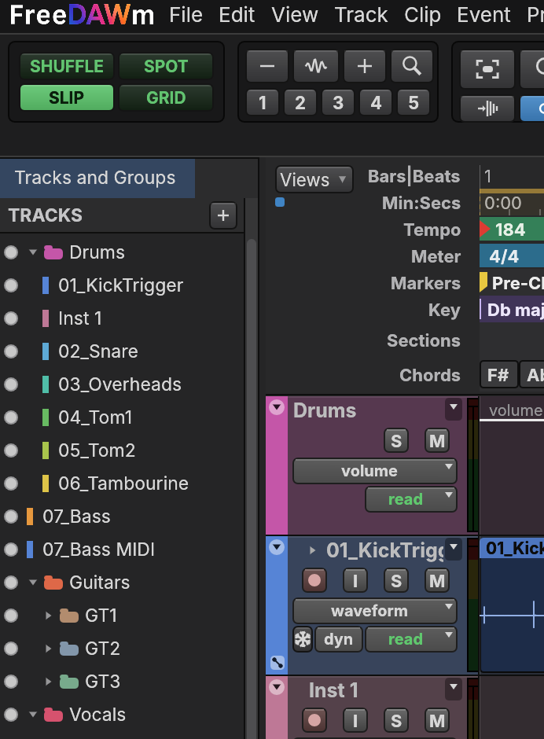
Convert to MIDI. Pick a model for the instrument. Isolate first separates that instrument before reading its notes. Analyse lets you audition the result before you commit.
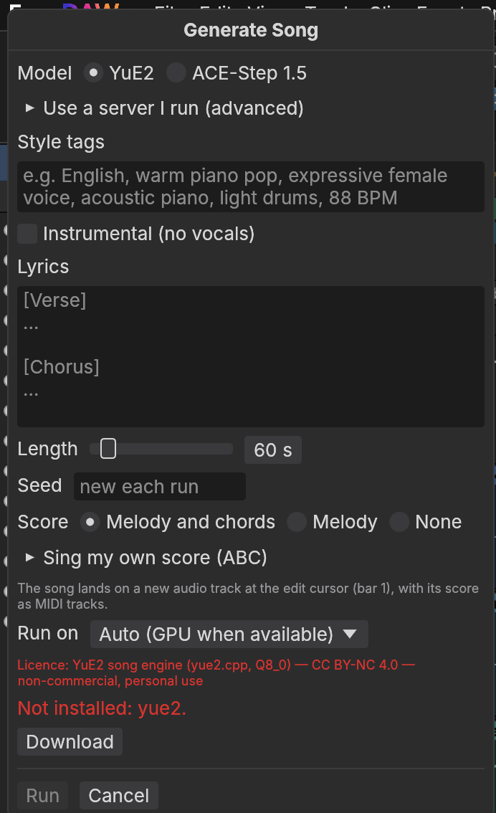
Generate Song. Describe the style, add lyrics under [Verse] and [Chorus] headings, and set a length. The same seed makes the same song again.
The AI tools need model files that are not shipped with FreeDAWm. Download the ones you want once, in Setup › ML Models. Clean Vocal's noise removal and Tune Vocal work without any download.
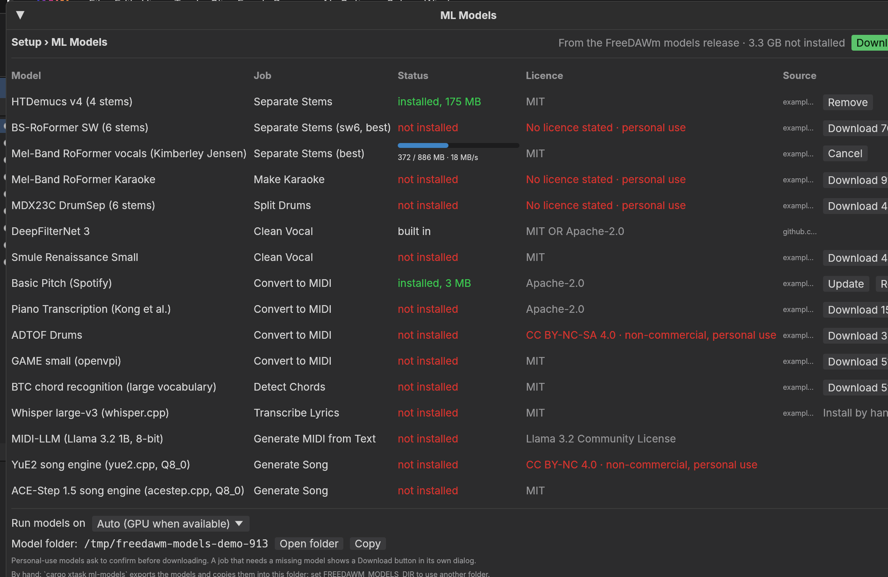
ABCDEFGHRead the Licence column before you use a result in music you sell. Some models are for personal use only, and FreeDAWm asks you to confirm before downloading those.
Turn the session into a file people can play, send the separate parts to someone else, and take your work to another program.
Make one audio file of the whole mix, the file you share or upload. Choose File › Bounce Mix, or press Cmd Alt B.
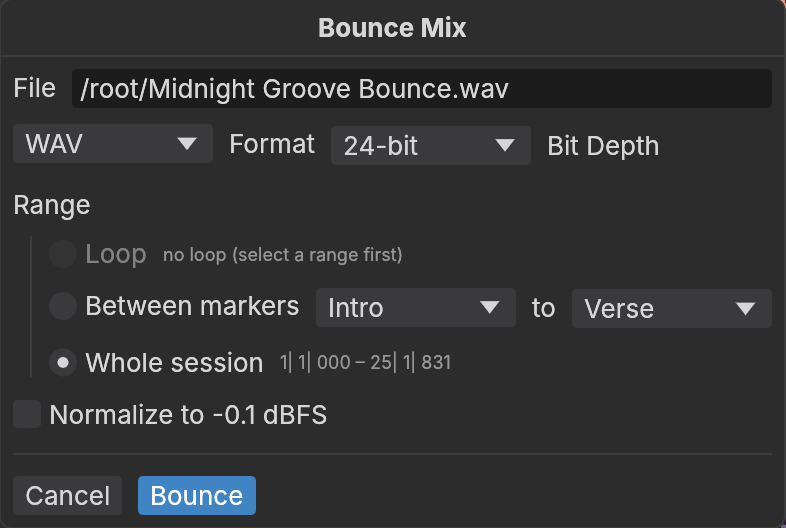
ABCDE| WAV or AIFF | Full quality, large files. Use these for mastering, for distribution services, and to keep as your own copy. |
| FLAC | Full quality at about half the size. Good for archiving and sending. |
| MP3 or Opus | Small files that lose a little quality. Use these for email, messages and quick listens. |
| 16-bit | The CD standard. Fine for a finished song. |
| 24-bit | The usual choice, and what to send to a mastering engineer. |
| 32-bit float | Cannot clip. Use it for a mix you will keep working on elsewhere. |
Listen to the whole song once and watch the master meter. If it reaches the red, pull the master fader down and bounce again.
Get more than one stereo file out of a session: the separate parts for a collaborator, the notes for another program, or the whole project.
| You want | What you get | Where |
|---|---|---|
| Stems | One audio file per track, all the same length, so someone else can remix or master from the parts. | File › Export › Stems |
| Clips | The selected clips as separate audio files, for samples or sound effects. | File › Export › Clips |
| The notes | A MIDI file of your MIDI and instrument parts, to open in any other music program. | File › Export › MIDI |
| The project | A DAWproject file, an open format that other workstations can read, with tracks and clips in place. | File › Export › DAWproject |
| Some tracks | A new session holding only the tracks you selected. | File › Export › Selected Tracks as New Session |
| The words | The lyrics as plain text, or as an LRC file with timings for players that show lyrics. | File › Export › Lyrics |
| One track | A track rendered to audio with its effects, back in the session. | Track › Bounce or Track › Commit |
| The whole project | A complete copy in a new folder, with every audio file the session plays. Zip that folder to archive it or move it to another computer. | File › Save Session Copy In |
The same menu works the other way. File › Import brings in audio, MIDI, video, DAWproject files and the tracks of another session.
Every menu in the menu bar, group by group, so you can find a command by where it lives.